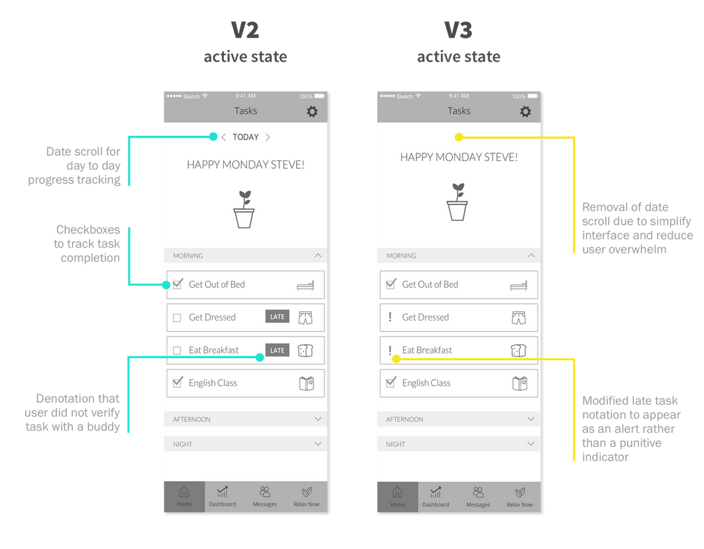
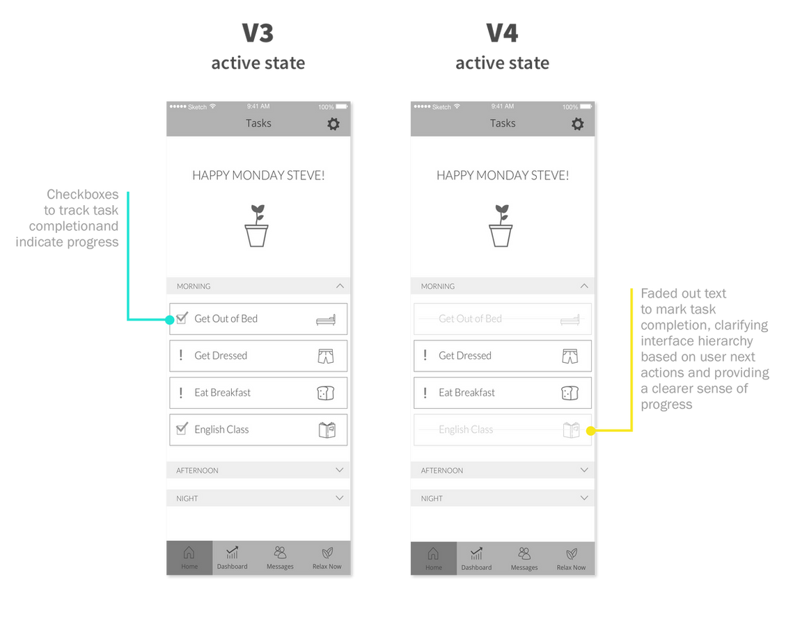
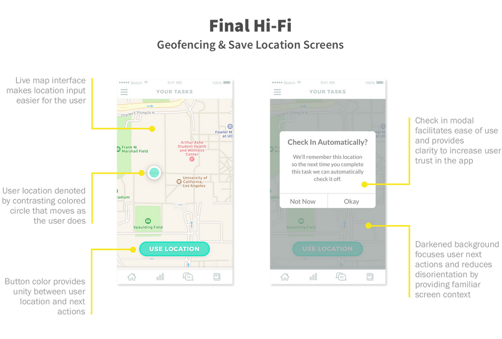
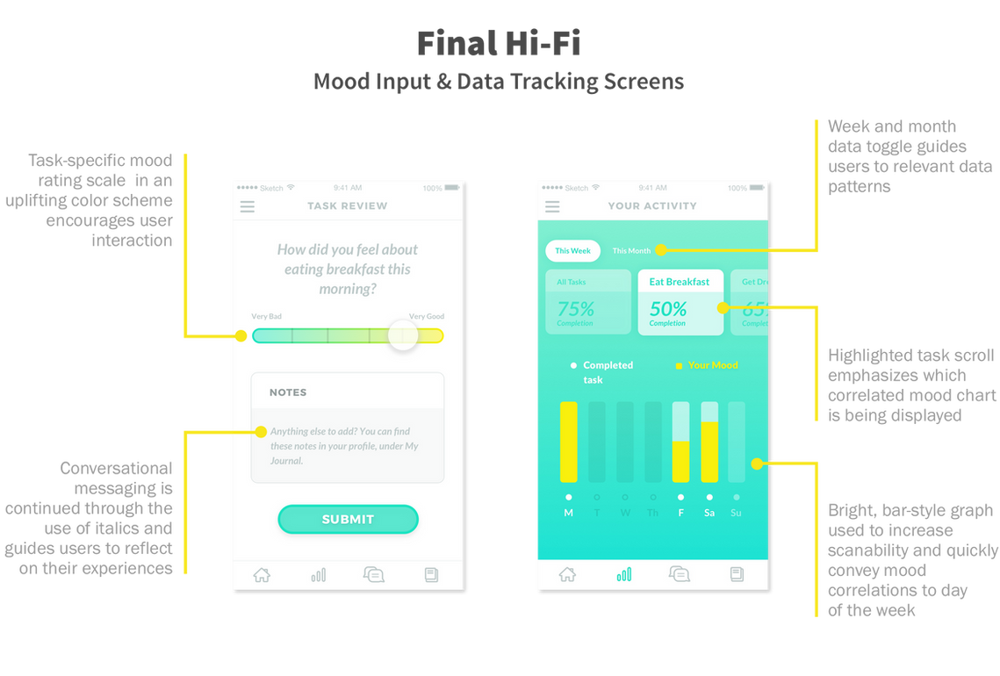
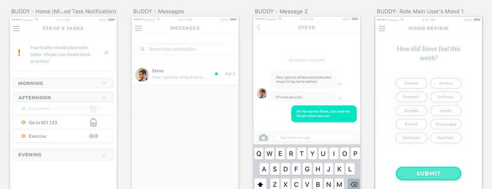

アトラス
目標： アトラスアプリの最小限の実行可能製品とブランドの方向性を設計し、2つの異なるユーザータイプと認知行動療法の演習の将来の統合をサポートします。
認知行動療法（CBT）の役割
不安と欲求不満は、いずれもうつ病の症状の特徴であり、日常生活との関係に大きな影響を与えます。
CBTは特に日常活動における不安を取り扱い、タスクを管理可能な部分に分割し、ストレスと満足感をタスクと関連付けて、タスクの前後で感じる感情を報告することによって人々が自分の心の枠組みを学び、日常の活動を行う際の気分変動の理由についてより意識的になるのに役立ちます。アトラスは、CBTスタイルのタスク管理、セラピストの監督、愛する友人や家族からのサポートの組み合わせを通じて、学生が自己ケアの障害を乗り越えるのを支援することを目指しています。
アプリは、将来的にはサブスクリプションベースのサービスとして構築され、主なユーザーはデザインしているフローのためのクライアントのセラピストであり、主なユーザーが進捗状況を追い続けるためのサポート役としてアカウンタビリティバディがいます。
研究

ローファイの反復


ハイファイでムードを作り出す



プロジェクトの振り返り
このプロジェクトは、幅広い範囲から深い知識まで、多くの課題を提供しました。アプリの創設者のビジョンを本当に理解するためには、どの部分が最も重要かを迅速に判断する能力を身につける必要があります。 最小限の実行可能なプロジェクトにとって価値のあるものを迅速に解析する方法を学ぶことは、このプロジェクトで得た重要なスキルであり、ビジネスの視点からプロジェクトアプローチを内面化するのに役立ちました。 さらに、短期間の研究時間枠では、有用な類似研究を提供できるグループを見つけるためのクリエイティブなチームワークが必要でした。新しいデザインプロジェクトに取り組む際や、どのようにデータを最も効果的に収集するかを解決する際に、このマインドセットを引き続き活用します。